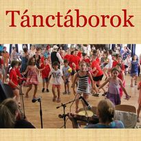

SZAKKÖRÖK, TÁNCHÁZAK, TÁNCTÁBOROK
SZAKKÖRÖK
Az iskolában az órarendi keretek között megszerzett néptánctudást, a délutáni szakkörrel szeretnénk még több tánccal, népdalokkal és népi játékokkal kiegészíteni.

TÁNCHÁZAK
A táncházakban az önfeledt felhőtlen szórakozás párosul a korosztálynak megfelelő táncok megismerésével. Népihagyományok, gyermekjátékok, tájegységek táncai, népdalok megismerése vidám hangulatban.

TÁNCTÁBOROK
TÁNCTÁBOR A CSIKIBEN
2025 június 23 – 24 – 25 – 26 - 27
A nyári szünetben megrendezzük 4. Tánctáborunkat. Büszkén mondhatjuk a szervezőkkel együtt, hogy több éve a legszínvonalasabb táborok között említenek minket az országban. Mindezt a délelőtti órákban zajló sokszínű tánctanítással (néptánc, hip – hop tánc) és a délutáni programok széles választékával értük el (kézműveskedés, középkori bemutató - íjászat, sportos vetélkedők, állatbemutató, lovaglás, huszárbemutató, ugráló vár). A tábor 7.30-tól 16.00-ig tart. A tábor költsége: 45.000 Ft.
Az összeget lehet részletekben is fizetni készpénzben, vagy átutalással. Jelentkezni lehet 10.000 Ft előleg átutalásával az alábbi számlaszámra. Túljelentkezés elkerülése végett, jelentkezés sorrendjében tudjuk csak regisztrálni a gyerekeket. MHB Bank: Balogh László Kálmán: 10103056 - 12177600 - 01005000 Megjegyzésbe: tánctábor + név, osztály. Testvér kedvezmény 2000 Ft/hét/gyerek! Az étkezést (ebéd, uzsonna) költségét külön kell befizetni a tánctábor díjon felül, májusban a szokásos módon, ahogy az iskolai befizetés történik! Akik nem az iskola tanulói, azoknak az étkezést (kb. 2000 Ft/nap) a fenti számlaszámra kell + befizetni.
Helye: Csíkihegyek Általános Iskola 1118. Budapest. Csíki-hegyek u. 13-15 Várjuk szeretettel azok jelentkezését, akik szeretnének egy élményekben gazdag, tartalmas hetet együtt tölteni velünk. „Legyen benne vígasságunk“ Bővebb információ: Balogh László +36 702510999 lacidance@gmail.com
